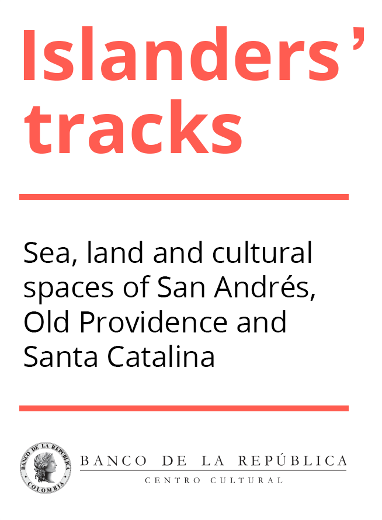

Conocer el archipiélago de San Andrés, Providencia y Santa Catalina requiere salir y recorrer las islas, navegar sus aguas, hablar con los isleños y experimentar la cultura local. En este mapa localizamos diversos lugares que son importantes para los isleños y que nos permiten entender su historia, sus tradiciones, sus conocimientos y su relación con el entorno. Es una invitación para que isleños y turistas descubran otra cara del archipiélago; esa que deja ver su estrecha relación con el Caribe y su intercambio con diversas culturas.
No hay un orden preestablecido para recorrer los lugares que seleccionamos. Cada uno nos cuenta una historia particular del sitio y un vínculo con facetas más amplias de la cultura, la memoria y la vida cotidiana de los isleños. Los hemos agrupado en 5 sistemas: el primero se refiere a los usos culturales dados al agua dulce, considerando que su manejo adecuado ha sido una garantía para la vida en el archipiélago. El segundo sistema llama la atención sobre los lugares de encuentro y recreación que han sido fundamentales para la vida comunitaria y la supervivencia cultural del pueblo raizal en su territorio. El tercer sistema nos lleva a dar un paseo por la historia y la memoria, por aquellos lugares cuyos nombres nos hablan de sucesos que ocurrieron en el pasado y a través de los cuales perduran en el presente. El cuarto es una invitación a conocer las actividades tradicionales de los isleños, y cómo se han inscrito y se continúan inscribiendo en el espacio de las islas. Y, finalmente, un quinto y último sistema, nos cuenta un poco sobre las relaciones de los isleños con la naturaleza que los rodea, la cual ha garantizado durante generaciones su permanencia en las islas.
Sistema cultural asociado a los usos del agua
El agua dulce, un recurso escaso en el área insular, ha influido notablemente en el estilo de vida y la cultura de los isleños. Para enfrentar las dificultades de acceder a este líquido y abastecerse de él, el pueblo raizal desarrolló diversas formas de aprovechamiento mediante el uso de arroyos, pozos y manantiales naturales, así como por medio de la construcción de cisternas, que permitieron la vida en las islas durante siglos. La importancia de esta relación, que todavía persiste aunque reconfigurada y debilitada por los nuevos contextos y modelos de desarrollo, se expresa en una geografía del agua en las islas, que se evidencia en muchos de los nombres asignados al territorio, así como en otros aspectos observables de la vida cotidiana del pueblo raizal.
Espacios de encuentro y recreación
La vida comunitaria ha sido de especial trascendencia para el pueblo raizal del archipiélago y por eso existen diversos espacios de encuentro y sociabilidad, que facilitan el intercambio comunitario y fortalecen la solidaridad entre los isleños. La mayoría de ellos están asociados a las expresiones religiosas, culturales y recreativas, como los cultos bautistas, católicos y adventistas, la música, la danza, los juegos tradicionales o los deportes.
Lugares de importancia para la historia y la memoria
El territorio es un vínculo que une a los miembros de una comunidad, así como a estos con su pasado, su presente y su futuro. Por tal motivo, en el territorio se inscriben dispositivos de la memoria y la historia, nombres u objetos que ayudan a las comunidades a recordar sucesos o procesos pasados. Con frecuencia, estos nombres u objetos son el último vestigio de lo que ocurrió, y en la medida en que desaparecen, también lo hacen las historias asociadas a ellos. Para el pueblo raizal, que posee una cultura donde la oralidad es fundamental, estos lugares son muy importantes, pues cumplen un papel clave para la transmisión de la memoria y la historia local hacia las nuevas generaciones. No obstante, con el paso del tiempo, muchos de estos lugares y sus nombres han empezado a olvidarse, al tiempo que varios han sido sustituidos por nombres nuevos, traídos por los habitantes más recientes, lo cual amenaza la memoria y la historia de los raizales.
Lugares de importancia para las actividades económicas tradicionales
Históricamente, los nativos desarrollaron modos de vida asociados a las posibilidades que ofrecía el entorno, entre las cuales se destacan la pesca, la agricultura y la navegación; por medio de éstas, garantizaron su bienestar durante siglos. Cada una de estas actividades era practicada por diversas personas, aunque ha sido muy frecuente que los isleños realicen varias actividades económicas diferentes, como parte de sus estrategias de vida. Igualmente, para cada una de estas actividades se utilizaban ecosistemas y espacios diversos, al tiempo que se requería el desarrollo de conocimientos y habilidades específicas que forman parte de la herencia cultural de los raizales.
Lugares de importancia socioambiental
La relación del pueblo raizal con su entorno ha sido una garantía para el desarrollo de la vida en las islas. A lo largo de al menos tres siglos en estrecha relación con los ecosistemas terrestres y marinos presentes en su territorio, los isleños aprendieron a hacer uso de ellos, desarrollando elaborados conocimientos y prácticas, que les permitieron satisfacer las necesidades propias de la cotidianidad y garantizar su bienestar. Aun cuando en tiempos recientes muchas prácticas han cambiado, a consecuencia de transformaciones mayores en las formas de vida tradicionales, lo cual ha ocasionado el surgimiento de conflictos ambientales, esto no debe hacernos olvidar el estrecho vínculo existente entre los isleños y la naturaleza, que permitió también que las islas se conservaran en alto grado hasta épocas recientes. Este sistema de lugares presenta una selección de aquellos en los que se evidencia esta relación entre los habitantes ancestrales de las islas y sus ecosistemas y, en algunos casos, cómo se ha transformado esta relación, con la intención de destacar la importancia de valorar las formas de uso tradicionales, con miras a un futuro sostenible. Como verán, muchos son también sitios de gran belleza paisajística, que vale la pena conocer.

Tipología
- Agua dulce
- Historia y memoria
- Naturaleza
- Actividades tradicionales
